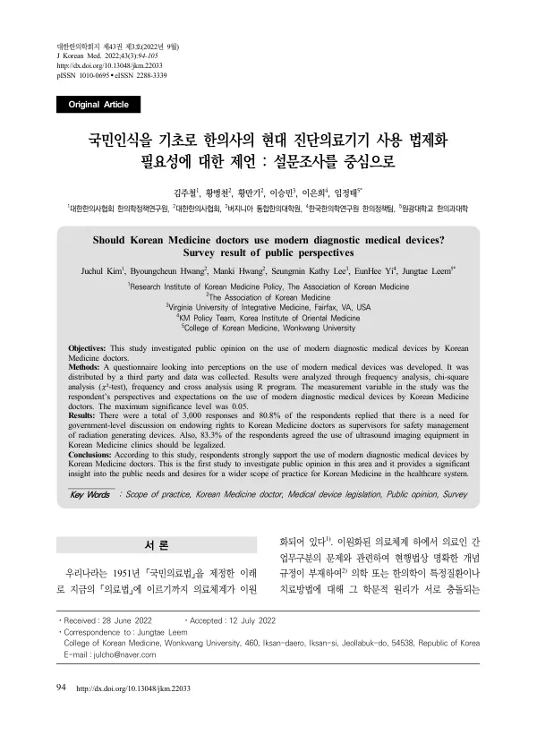

Should Korean Medicine doctors use modern diagnostic medical devices? Survey result of public perspectives
Kim J, Hwang B, Hwang M, Lee SK, Yi E, Leem J
Journal of Korean Medicine 43(3):94-105

첫 장 · 오픈액세스First page · open access
논문 소개Summary
우리나라 의료체계는 1951년 국민의료법 이래 이원화되어 있지만, 한의사와 의사의 업무 범위를 법에 명시해 두지는 않았습니다. 그래서 분쟁이 생길 때마다 법원과 헌법재판소가 사회통념에 비추어 개별 사건마다 판단해 왔습니다. 그런데 그 사회통념이 실제로 무엇인지 물어본 연구가 없었습니다. 이 연구는 그 빈자리를 메우려고 국민에게 직접 물었습니다.
여론조사기관에 의뢰해 2022년 3월 10일부터 18일까지 전국 19세 이상 3,000명을 조사했습니다. 성별과 연령, 지역을 주민등록인구 기준으로 맞춰 뽑았고 온라인 절반, 전화면접 절반으로 진행했습니다. 문항은 관련 법령과 판례를 검토한 뒤 한의예과 교수와 보건행정학과 교수의 감수를 거쳐 19개로 짰습니다.
참여자의 54.1%가 최근 1년 안에 한의 의료기관을 이용한 적이 있었고 방문 목적은 근골격계 질환 치료가 47.3%로 가장 많았습니다. 한의학의 치료 효과를 신뢰한다는 응답은 82.0%였습니다. 법제화에 대해서는, 한의사를 X선 등 방사선 발생장치의 안전관리 책임자로 지정할 법적 근거를 마련하는 데 80.8%가 찬성했고, 초음파영상진단장치를 진료에 쓸 수 있도록 법제화해야 한다는 응답이 83.3%였습니다. 현대 진단의료기기를 한의사가 사용해야 한다는 응답은 84.8%에 이르렀습니다. 진료 범위로는 55.2%가 현대과학에 기반한 필수적 기기를 허용해야 한다고, 16.4%가 모든 현대 진단의료기기를 허용해야 한다고 답했습니다.
기대 효과로는 환자 만족도 향상(80.6%)이 가장 높았고 중복 방문의 불편과 시간 절약(79.7%), 의료비 부담 경감(75.0%)이 뒤를 이었습니다. 저자들은 이를 두고 비용 절감보다 상세한 진단에 대한 기대가 더 크다고 읽었습니다. 성별로는 남성이, 연령으로는 40~50대가 더 동의했고, 한의 의료기관을 이용한 적이 있는 사람일수록 더 동의했습니다(p<0.05).
한계는 저자들이 스스로 적었습니다. 사회통념을 이루는 여러 요인 가운데 국민 여론 하나만 조사했으므로 나머지는 알 수 없고, 여론이 사회통념 전체를 대변하지도 않습니다. 그럼에도 이 주제로 전국 3,000명을 조사한 첫 연구이고, 법적 판단의 방향을 정할 때 참고할 자료를 남겼습니다.
Korea's healthcare system has been dual-track since the National Medical Services Act of 1951, yet the law has never spelled out where the scope of practice of a Korean medicine doctor ends and that of a physician begins. Whenever a dispute arises, the courts and the Constitutional Court decide case by case against what they call common social notion. No study had asked what that notion actually is. This survey went directly to the public to find out.
A polling firm surveyed 3,000 adults aged 19 and over nationwide between 10 and 18 March 2022, sampled by sex, age and region against resident registration statistics, half online and half by telephone interview. The 19 questions were drafted after a review of the relevant statutes and case law and vetted by a professor of Korean medicine and a professor of health administration.
Of the respondents, 54.1% had visited a Korean medicine clinic or hospital within the past year, most often for musculoskeletal conditions (47.3%), and 82.0% said they trusted the therapeutic effect of Korean medicine. On legislation, 80.8% supported creating a legal basis for Korean medicine doctors to be designated safety managers for radiation-generating devices such as X-ray equipment, and 83.3% agreed that use of ultrasound imaging equipment in Korean medicine practice should be legalised. Agreement that Korean medicine doctors should use modern diagnostic devices reached 84.8%. As for scope of practice, 55.2% said essential modern diagnostic devices grounded in modern science should be permitted and 16.4% would permit all of them.
The most widely shared expectation was greater patient satisfaction (80.6%), followed by avoiding the inconvenience and time of a second visit elsewhere (79.7%) and lower medical costs (75.0%). The authors read this as expectation of a more detailed diagnosis outweighing expectation of savings. Men agreed more than women, respondents in their forties and fifties most of all, and those who had used Korean medicine services agreed more than those who had not (p < 0.05).
The authors state the limitation themselves: of the many components of common social notion, only public opinion was surveyed, and public opinion does not stand for the whole of it. Even so, this is the first nationwide survey of 3,000 people on the question, and it puts on record something that legal judgement can refer to.
인용Cite
Kim J, Hwang B, Hwang M, Lee SK, Yi E, Leem J. Should Korean Medicine doctors use modern diagnostic medical devices? Survey result of public perspectives. Journal of Korean Medicine. 2022;43(3):94-105. doi:10.13048/jkm.22033